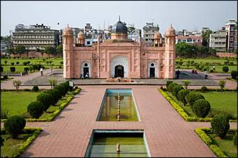

<p style="text-align: justify;">Lalbagh Fort (also known as "Fort Aurangabad") is an incomplete Mughalpalace fortress at the Buriganga River in the southwestern part of Dhaka, Bangladesh. Construction was commenced in 1678 by Prince Muhammad Azam during his 15-month long vice-royalty ofBengal, but before the work could complete, he was recalled by Aurangzeb. His successor, Shaista Khan, did not Complete the work.Though he stayed in Dhaka up to 1688. His daughter bibi pari (Lady Fairy) died here in 1684.</p>
